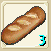
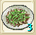
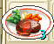

| 名称 |
画像 |
効果 |
材料 |
| 台湾名表示 |
| 調理Lv1 |
| ケチャップ |
|
FPが約30回復する |
トマト5 ビン1 |
| 蕃茄醤 |
| パン |
|
FPが約100回復する |
小麦粉16 牛乳10 塩5 |
| 麺包 |
| 神聖マヨネーズ |
|
ギルドクエ用 |
塩1、神聖油2、神聖酢1、たまご2 |
| 神聖美？滋 |
| ご飯 |
|
FP約30回復 |
茶碗の欠片5、神聖米5 |
| 白飯 |
| マヨネーズご飯ゴマ和え |
|
FP約300回復 |
ごまたん1、神聖マヨネーず3、ご飯3 |
| 美？滋芝麻拌飯 |
| たまごかけご飯 |
|
FP約50回復 |
ご飯3、たまご10 |
| 蛋飯 |
| 調理Lv2 |
| オムレツ |
|
FP約150回復する |
たまご10 牛乳15 塩5 クレソン1 ケチャップ1 |
| 蛋包飯 |
| バケット |
 |
FP約200回復する |
小麦粉20 牛乳20 塩20 |
| 法國麺包 |
| 調理Lv3 |
| やきそば |
|
FP約250回復する |
小麦粉20 塩10 のり20 しょうが12 |
| 炒麺 |
| チンジャオロース |
 |
FP約300回復する |
塩10 牛肉20 たけのこ20 ピーマン20 |
| 青椒肉絲 |
| 猛毒の餌 |
|
クエストで使用 |
牛肉20 シシコロリ1 |
| 猛毒的餌 |
| 調理Lv4 |
| ローストチキン |
|
FP約350回復する |
塩20 鶏肉20 コショウ20 レモングラス20 |
| 燒鶏 |
| 親子丼 |
|
FP約400回復する |
たまご20 ねぎ20 しょうゆ20 鶏肉20 お米20 |
| 親子丼 |
| 調理Lv5 |
| ハンバーグ |
 |
FP約450回復する |
たまご20 ねぎ20 ケチャップ3 牛肉20 |
| 漢堡 |
| あなごのにぎり |
|
FP約500回復する |
塩20 しょうゆ20 お米20 のり20 あなご20 |
| 星鰻飯？ |
| しょうゆ豚骨ラーメン |
|
FP約400回復する |
豚肉20 のり20 しょうゆ20 たまご20 小麦粉20 |
| 醤油豬骨拉麺 |
| 調理Lv6 |
| 焼きそばパン |
|
FP約550回復する |
バケット1 焼きそば1 |
| 炒麺麺包 |
| すき焼き |
|
FP約600回復する |
ネギ20 しょうゆ20 塩20 牛肉20 砂糖20 |
| 壽喜鍋 |
| 調理Lv7 |
| カレーライス |
|
FP約650回復する |
ネギ20 鶏肉20 ジャガイモ20 お米20 カレールー10 |
| 口加哩飯 |
| 石焼ビビンバ |
|
FP約700回復する |
卵10 塩20 牛肉20 お米20 唐辛子20 |
| 韓式泡菜飯 |
| 水龍料理 |
|
ペットのなつきやすさ+10 |
水龍のひれ1 |
| 水龍料理 |
| 調理Lv8 |
| イスカルなべ |
|
FP約750回復する |
ネギ20 しょうゆ20 じゃがいも20 唐辛子20 かに10 |
| 傍蟹鍋 |
| ステーキ |
|
FP約800回復する |
塩20 コショウ10 じゃがいも10 高級バター20 霜降り肉20 |
| 牛排 |
| 魅惑のメロンパン |
|
エンカ率上昇
御用達クエ用 |
小麦粉20、牛乳20、砂糖20、マジカルキャロット10、アルパネスメロン3 |
| 魅惑的哈密瓜麺包 |
| 調理Lv9 |
| ちらし寿司 |
|
FP約850回復する |
のり20 あなご20 お米20 かに20 イセエビ10 |
| 醋飯壽司 |
| 重箱 |
|
FP約900回復する |
たまご20 しょうゆ20 のり20 イセエビ15 うに15 |
| 豪華壽司組 |
| 調理Lv10 |
| フカヒレスープ |
|
FP約1000回復する |
たまご20 ねぎ20 しお20 コショウ20 フカヒレ20 |
| 魚翅湯 |
| スッポン料理 |
|
FP約1200回復する |
唐辛子20 かに20 イセエビ10 うに10 スッポン20 |
| ？料理 |
| 調理Lv11 |
| チゲ鍋 |
|
FP約1400回復する |
石鯛20、カニ20、イセエビ40、スッポン20、キムチ3 |
| 韓式海鮮鍋 |